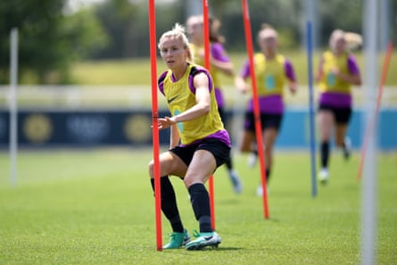
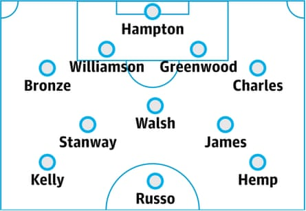

This article is part of the Guardian’s Euro 2025 Experts’ Network , a cooperation between some of the best media organisations from the 16 countries who qualified. theguardian.com is running previews from two teams each day in the run-up to the tournament kicking off on 2 July.
Overview
England travel to Switzerland with expectations as high as ever. However, they have had a tumultuous buildup to the tournament, where they will aim to defend their title from 2022. The retirement of the goalkeeper Mary Earps and midfielder Fran Kirby , followed by the withdrawal of centre-back Millie Bright , for very different reasons, put them at the centre of a storm of intrigue one month out.
Where does that leave the team? Despite those absences England’s squad is packed with potential. The return of Lauren Hemp, Alex Greenwood and Georgia Stanway following knee surgeries this year is a huge boost, despite their limited match action this season. Bright’s absence means there is pressure on Greenwood to be at her best alongside Leah Williamson in central defence.
Look down the squad list and the midfield looks somewhat light, with only five players named, including Stanway, who only played 60 minutes of football in 2024-25. “We have to announce it as strikers, midfielders and defenders, but you can move players around into different positions,” said the head coach, Sarina Wiegman. “So it looks like there’s not much depth on paper, but in the team we have enough depth in midfield.”
Williamson can play in midfield, as can Maya Le Tissier, or Lauren James, and the former head coach Phil Neville experimented with Lucy Bronze more centrally. However, any of these players being forced to shift positions would be a big departure from a desired starting XI and a test of their adaptability.
Can England defend their title? They have a shot. However, having been drawn in the trickiest of groups, with matches against France, then the Netherlands and finally Wales, they will not be afforded time to grow into the tournament. Progressing to the knockout stages having beaten some big names, on the other hand, would benefit the group’s momentum.
The coach
Sarina Wiegman has a remarkable record in major tournaments, having reached four finals in a row, winning the Euros in 2017 with the Netherlands and five years later with England , while getting to two World Cup finals. She heads to Switzerland with a third successive European title in her sights but also perhaps under more pressure than ever. The retirements of Earps and Kirby and subsequent withdrawal of Bright left many asking if all remains sunny in the England camp. Having previously been applauded for her straight-talking style and the clarity it provides for players, her ruthlessness is now raising some concerns. However, if that approach leads England to victory again, the narrative will shift back into it being a positive.
Star player
Leah Williamson oozes star quality and following the withdrawal of Bright, and Greenwood only recently returning from injury, there is more pressure on the Champions League winner to deliver from the back. The 28-year-old is as vital to England’s forward play as she is to their defensive structure and solidity, her incisive passes from deep and driving runs critical to the way England play.
Having missed out on the 2023 World Cup following an ACL rupture, the journey back to full fitness and peak performance hasn’t been the smoothest. However, Arsenal’s Champions League triumph showed the centre-back is back to her best and in the final there was no beating her. “No one ever knows what’s going on behind the scenes,” she said afterwards. “I was only fully fit from illness or injury in November last year. I keep my head down, keep trying my best and keep working.”
Leah Williamson is vital to England’s defence of the trophy.Photograph: Harriet Lander/The FA/Getty Images
One to watch
Earps’s retirement puts pressure on the Chelsea shot-stopper Hannah Hampton . The treble-winner has 15 caps for England and will start in goal for the holders as well as helping guide the uncapped Khiara Keating and Anna Moorehouse through it. Hampton was winning the battle to be England’s No 1 anyway, with the 24-year-old’s distribution a highlight, but Earp’s presence on the global stage was considerable. Hampton has shown she can perform when it matters, having been preferred to Earps several times, including against Spain in the Arnold Clark Cup and Nations League. Euro 2025 will pose a greater challenge.
Probable lineup
Status of domestic top flight
The Women’s Super League enters its next phase after one season under WSL Football, the body which took over the running of the top two tiers from the FA in August 2024. Rebranded and with new minimum standards to be introduced, including the Championship (now WSL2) aligning with the top flight in becoming a fully professional league, expectations of next season are high. A record five-year broadcast rights deal was signed with the BBC and Sky Sports in 2024 and is worth £65m plus production costs. Meanwhile growing attendances, spearheaded by Arsenal , and increasing club investments at the top end, such as Alexis Ohanian’s £20m in Chelsea, have put playing in England on the wishlist of many top international players.
Realistic aim in Switzerland
The sky’s the limit. However, England are in a difficult group. Escaping that will be a feat in itself but, while anything other than winning the tournament will feel disappointing, a semi-final exit would not be a disaster. Things cannot progress upwards in a straight line for ever.